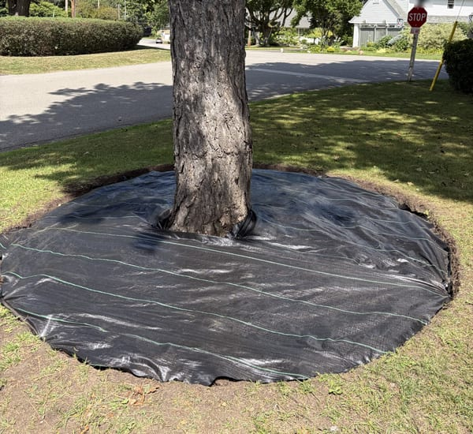
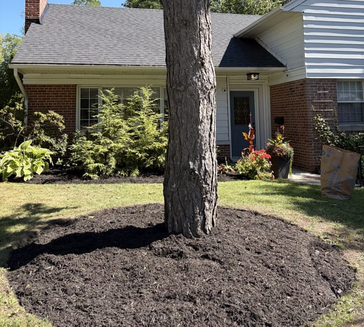
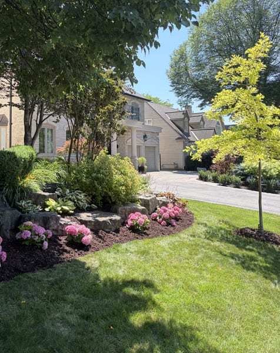
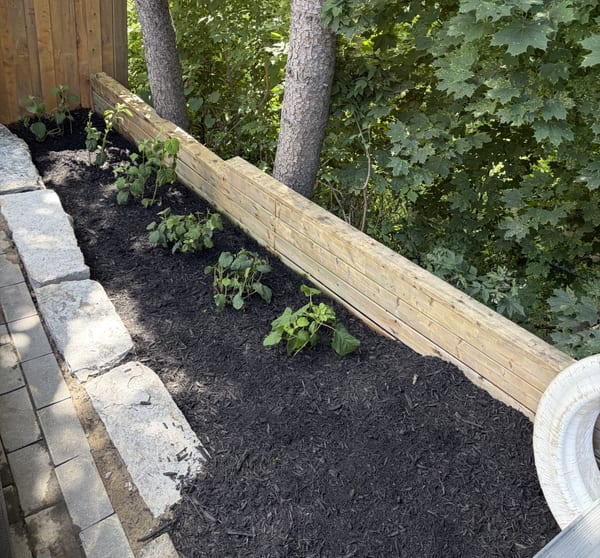
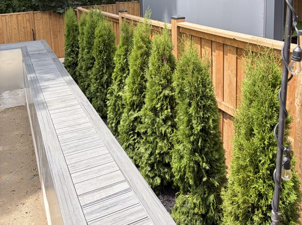

Yard cleanups & junk removal
Overgrowth, dead plants, brush, old structures. We clear it and haul it away, so you're not left with a pile.

Cleanups, mulch, rock, interlock, planting and fence work across Etobicoke. One-time transformations or every-week upkeep.
Overgrown, weeds through the pavers, junk in the corner. Cleared, hauled out, regraded, and finished in river rock with hydrangeas along a freshly stained fence.


Drag to compare →
Most jobs are a mix. Tell us what's bothering you about the yard and we'll tell you what it takes.
Overgrowth, dead plants, brush, old structures. We clear it and haul it away, so you're not left with a pile.
Fresh black mulch, cut edges, clean lines. The single fastest way to make a property look maintained.
Weekly or biweekly. Weeding, edging, deadheading, seasonal swaps. You stop thinking about it.
Beds planned around your light, your soil and how much upkeep you actually want. Shrubs, perennials, privacy hedging.
Sourced, placed and planted properly, with the first season's care explained so it survives.
Rock beds, stone paths, patios and walkways. Low-maintenance ground that still looks designed.
Stripping, staining, re-staining, board replacement. A stained fence changes a yard more than most people expect.
Siding, walkways, patios, decks. Removes the grey film you stopped noticing years ago.
Old turf stripped, soil graded and topped up, fresh rolls laid tight so the seams close. A finished lawn the same day, as long as you water it.
Thicker grass, thinner patches filled in, stronger roots. Fall is the right window.
From $350Shaped, evened out, cleaned up underneath. Overgrown cedars are the fastest-aging thing on a property.
Treatment for the bugs eating your plantings, applied so it doesn't take the garden with it.
Front yards, back yards, and a few places that needed rescuing.











Our backyard had gotten away from us — weeds through the pavers, junk piled in the corner. They cleared the whole thing out and finished it in river rock. It doesn't look like the same house.
We've had them on biweekly beds for two seasons now. They show up, the edges are always sharp, and I never have to think about it.
Quoted the fence staining and the mulch together, gave me one number, and that was the number on the invoice. Refreshing.
All over Etobicoke — The Kingsway, Sunnylea, Mimico, New Toronto, Long Branch, Alderwood, Humber Bay Shores, Markland Wood, Eatonville, Princess Gardens, Islington, Richview, Thistletown and Rexdale. Just outside? Ask anyway — we'll tell you straight.
Send a couple of photos and rough measurements if you have them. We'll come back with a quote and a timeline.
437-922-8301